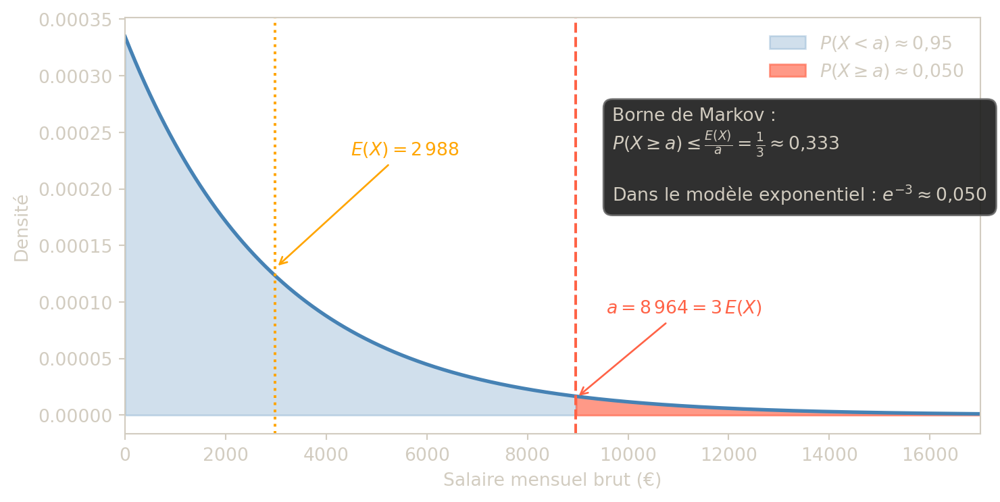
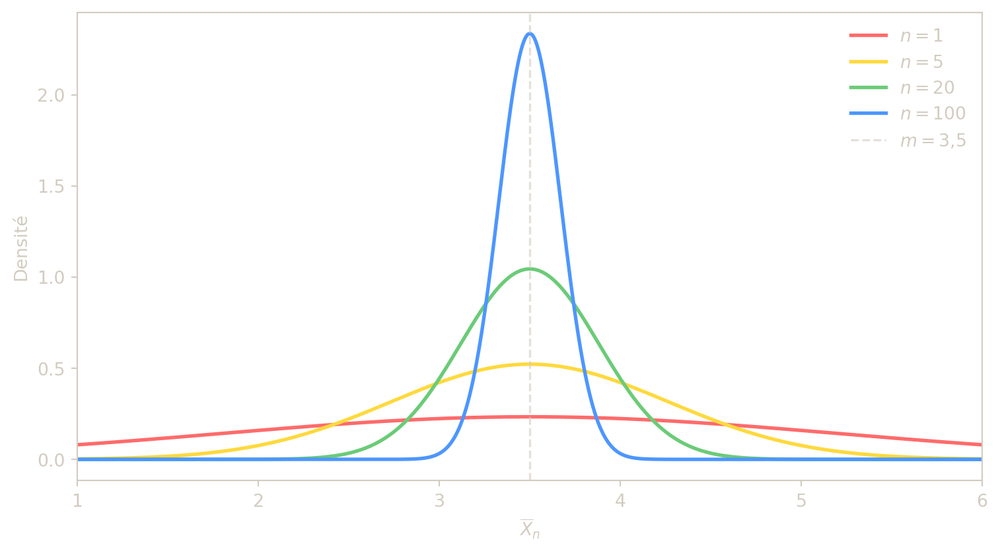
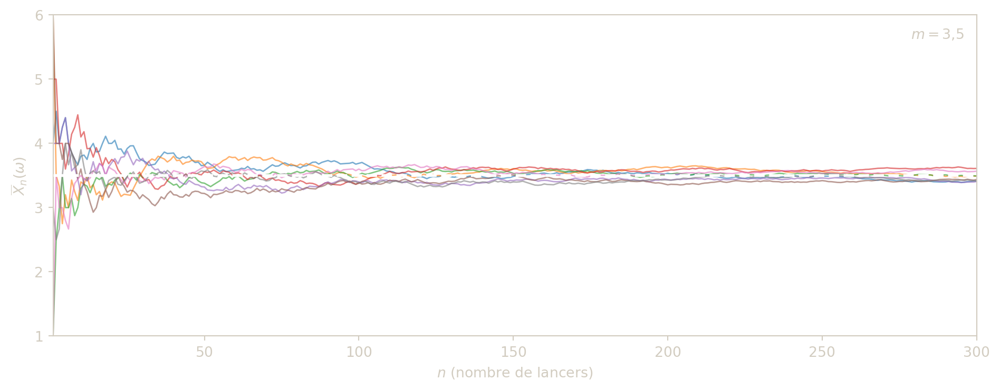
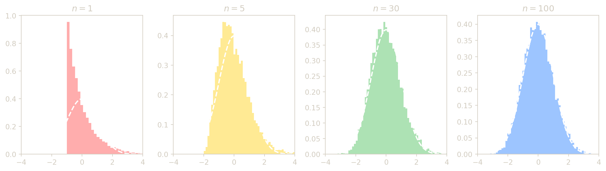

Convergence de variables aléatoires
Résumé
Ce chapitre étudie les différentes notions de convergence pour des suites de variables aléatoires. On présente d’abord les inégalités de concentration (Markov, Bienaymé-Tchebychev) qui permettent de contrôler les déviations d’une variable par rapport à son espérance. On introduit ensuite la convergence en probabilité et la convergence en moyenne quadratique, et on établit la loi faible des grands nombres. On présente la convergence presque sûre, la loi forte des grands nombres et la méthode de Monte-Carlo. Le chapitre se poursuit par la convergence en loi et le théorème limite central, puis se termine par les résultats de continuité et le théorème de Slutsky.
Inégalités de concentration
Cette première partie répond à une question simple : à quel point une variable aléatoire peut-elle s’écarter d’une valeur centrale (son espérance) ? Les inégalités de concentration fournissent des bornes générales, utiles même quand on ne connaît pas la loi exacte de la variable.
Inégalité de Markov
L’inégalité de Markov est l’outil de base : elle transforme une information sur la moyenne en un contrôle de probabilité de dépassement d’un seuil.
Proposition — Inégalité de Markov
Soit \(X\) une v.a.r. intégrable positive. Alors : \[\forall a > 0,\quad P(X \geq a) \leq \frac{E(X)}{a}.\]
Démonstration
Étape 1 — Une inégalité trajectorielle. Montrons que, pour tout \(\omega \in \Omega\) : \[X(\omega) \geq a\,\mathbf{1}_{\{X \geq a\}}(\omega).\]
- Si \(X(\omega) \geq a\) : l’indicatrice vaut 1, donc le membre droit vaut \(a \leq X(\omega)\). ✓
- Si \(X(\omega) < a\) : l’indicatrice vaut 0, donc le membre droit vaut \(0 \leq X(\omega)\) (car \(X \geq 0\)). ✓
Étape 2 — On prend l’espérance. L’espérance étant croissante (si \(U \leq V\) p.s. alors \(E(U) \leq E(V)\)), on obtient : \[E(X) \geq E\!\left(a\,\mathbf{1}_{\{X \geq a\}}\right).\]
Étape 3 — On simplifie le membre droit. Par linéarité de l’espérance et définition de l’indicatrice : \[E\!\left(a\,\mathbf{1}_{\{X \geq a\}}\right) = a\,E\!\left(\mathbf{1}_{\{X \geq a\}}\right) = a\,P(X \geq a).\]
Conclusion. On a donc \(E(X) \geq a\,P(X \geq a)\). Comme \(a > 0\), on divise des deux côtés par \(a\) : \[P(X \geq a) \leq \frac{E(X)}{a}.\]
Cette inégalité ne suppose aucune connaissance de la loi de \(X\) au-delà de son espérance. Elle devient sans intérêt dès que \(a < E(X)\), car le majorant dépasse alors 1.
L’idée clé est la suivante : une grande moyenne force une certaine masse de probabilité vers les grandes valeurs, mais ne dit rien de précis sur la forme de la loi. Markov fournit donc une borne très générale, souvent grossière, mais applicable dans des situations où l’on connaît très peu d’information.
Exemple 1 — Salaire moyen en France
En 2022, le salaire brut mensuel moyen en France était de 2 988 €. Majorer la probabilité qu’un salarié français choisi au hasard gagne plus de 8 964 €.
Solution — Exemple 1
Soit \(X\) le salaire brut mensuel. On a \(E(X) = 2988\) et \(X \geq 0\). Par l’inégalité de Markov : \[P(X \geq 8964) \leq \frac{2988}{8964} = \frac{1}{3} \approx 0{,}333.\]
Moins d’un tiers des salariés gagnent plus de 8 964 € bruts par mois.
Inégalité de Bienaymé-Tchebychev
L’inégalité de Bienaymé-Tchebychev affine l’idée de Markov en tenant compte de la dispersion via la variance : elle borne la probabilité de s’éloigner de l’espérance de plus de \(\varepsilon\).
Proposition — Inégalité de Bienaymé-Tchebychev
Soit \(X\) une v.a.r. de carré intégrable. Alors : \[\forall \varepsilon > 0,\quad P(|X - E(X)| \geq \varepsilon) \leq \frac{\mathrm{Var}(X)}{\varepsilon^2}.\]
Démonstration
Étape 1 — Poser une variable auxiliaire positive. On pose \(Y = (X - E(X))^2\). Alors \(Y \geq 0\) (c’est un carré) et : \[E(Y) = E\!\left[(X - E(X))^2\right] = \mathrm{Var}(X).\]
Étape 2 — Appliquer l’inégalité de Markov à \(Y\). Avec le seuil \(a = \varepsilon^2 > 0\), l’inégalité de Markov appliquée à \(Y\) donne : \[P\!\left(Y \geq \varepsilon^2\right) \leq \frac{E(Y)}{\varepsilon^2} = \frac{\mathrm{Var}(X)}{\varepsilon^2}.\]
Étape 3 — Identifier l’événement. Pour tout réel \(t\), on a \(t^2 \geq \varepsilon^2 \iff |t| \geq \varepsilon\) (car \(\varepsilon > 0\)). Donc : \[\left\{Y \geq \varepsilon^2\right\} = \left\{(X - E(X))^2 \geq \varepsilon^2\right\} = \left\{|X - E(X)| \geq \varepsilon\right\}.\]
Conclusion. \[P\!\left(|X - E(X)| \geq \varepsilon\right) \leq \frac{\mathrm{Var}(X)}{\varepsilon^2}.\]
Remarques
- Cette inégalité est souvent médiocre numériquement : pour \(X \sim \mathcal{N}(m, \sigma^2)\), elle donne \(P(|X - m| \geq 2\sigma) \leq \tfrac{1}{4}\), alors que la valeur exacte est environ \(0{,}05\).
- Son intérêt est avant tout théorique : elle permet de démontrer la loi faible des grands nombres et de calibrer les tailles d’échantillon.
Autrement dit, Tchebychev complète Markov en ajoutant une information essentielle : non seulement on connaît le niveau moyen de la variable, mais on sait aussi à quel point elle est dispersée autour de ce niveau. Plus la variance est petite, plus la variable a tendance à rester proche de son espérance.
Exemple 2 — Paniers par match
Lors d’une saison, une équipe a marqué en moyenne 40 paniers par match avec une variance de 5. Majorer la probabilité que lors de son prochain match, l’équipe marque moins de 30 ou plus de 50 paniers.
Solution — Exemple 2
Soit \(X\) le nombre de paniers. On a \(E(X) = 40\) et \(\mathrm{Var}(X) = 5\). \[P(X < 30 \text{ ou } X > 50) = P(|X - 40| \geq 10) \leq \frac{\mathrm{Var}(X)}{10^2} = \frac{5}{100} = 0{,}05.\]
Exercice 1 — Précision d’un sondage
Dans une ville de 20 000 habitants, 75 % des personnes interrogées sont favorables à la rénovation du théâtre municipal.
On modélise les réponses par des tirages avec remise (ou, de manière équivalente ici, par des variables indépendantes de même loi).
Pour \(1\le k\le n\), on note \(X_k=1\) si la \(k\)-ième personne est favorable, \(X_k=0\) sinon.
- Donner la loi de \(X_k\), son espérance \(m\) et sa variance \(\sigma^2\).
- On note \(M_n=\dfrac{1}{n}\displaystyle\sum_{k=1}^n X_k\). Déterminer une taille d’échantillon \(n\) pour obtenir :
- une précision 0,05 avec risque 0,1, soit \(P(|M_n-m|\ge 0{,}05)\le 0{,}1\),
- une précision 0,01 avec risque 0,05.
Indication
- Sous cette modélisation, \(X_k\sim\mathcal{B}(p)\) avec \(p=0{,}75\).
- Utiliser l’inégalité de Bienaymé-Tchebychev : \[P(|M_n-m|\ge \varepsilon)\le \frac{\mathrm{Var}(M_n)}{\varepsilon^2} =\frac{p(1-p)}{n\varepsilon^2}.\]
- Pour la précision 0,05 avec risque 0,1 : \(n \geq \dfrac{p(1-p)}{\varepsilon^2 \cdot \alpha} = \dfrac{0{,}75 \times 0{,}25}{(0{,}05)^2 \times 0{,}1} = 750\).
- Pour la précision 0,01 avec risque 0,05 : \(n \geq \dfrac{0{,}75 \times 0{,}25}{(0{,}01)^2 \times 0{,}05} = 37\,500\). Ce chiffre dépasse largement la taille de la ville (20 000 hab.), ce qui rend le sondage irréalisable.
Correction — Exercice 1
Question 1 — Loi, espérance et variance de \(X_k\)
Sous l’hypothèse de tirages avec remise, chaque personne interrogée est soit favorable (\(X_k=1\)) soit défavorable (\(X_k=0\)), avec une probabilité \(p=0{,}75\) d’être favorable. Les \(X_k\) suivent donc une loi de Bernoulli : \[X_k \sim \mathcal{B}(p), \quad p = 0{,}75.\]
Les paramètres sont : \[m = E(X_k) = p = 0{,}75, \qquad \sigma^2 = \mathrm{Var}(X_k) = p(1-p) = 0{,}75 \times 0{,}25 = \frac{3}{16}.\]
Question 2 — Taille d’échantillon par l’inégalité de Bienaymé-Tchebychev
Les \(X_1,\ldots,X_n\) sont supposés indépendants et de même loi \(\mathcal{B}(p)\). La moyenne empirique \[M_n = \frac{1}{n}\sum_{k=1}^n X_k\] vérifie : \[E(M_n) = m, \qquad \mathrm{Var}(M_n) = \frac{\sigma^2}{n} = \frac{p(1-p)}{n}.\]
L’inégalité de Bienaymé-Tchebychev donne alors : \[P(|M_n - m| \ge \varepsilon) \le \frac{\mathrm{Var}(M_n)}{\varepsilon^2} = \frac{p(1-p)}{n\varepsilon^2}.\]
Pour garantir \(P(|M_n - m| \ge \varepsilon) \le \alpha\), il suffit d’imposer : \[\frac{p(1-p)}{n\varepsilon^2} \le \alpha \iff n \ge \frac{p(1-p)}{\varepsilon^2\,\alpha}.\]
Cas 1 — précision \(\varepsilon = 0{,}05\), risque \(\alpha = 0{,}1\) : \[n \ge \frac{0{,}75 \times 0{,}25}{(0{,}05)^2 \times 0{,}1} = \frac{0{,}1875}{0{,}00025} = 750.\]
Un échantillon de 750 personnes suffit.
Cas 2 — précision \(\varepsilon = 0{,}01\), risque \(\alpha = 0{,}05\) : \[n \ge \frac{0{,}75 \times 0{,}25}{(0{,}01)^2 \times 0{,}05} = \frac{0{,}1875}{0{,}000005} = 37\,500.\]
Un échantillon de 37 500 personnes serait nécessaire.
Commentaire sur le réalisme
La ville ne compte que 20 000 habitants. Il faudrait interroger 37 500 personnes, soit davantage que la totalité de la population — ce qui est évidemment impossible.
Ce paradoxe illustre une limite de l’inégalité de Bienaymé-Tchebychev : la borne \(p(1-p)/(n\varepsilon^2)\) est très pessimiste. En pratique, on utilise le théorème central limite (TCL) qui donne une borne bien plus précise : \[P(|M_n - m| \ge \varepsilon) \approx 2\left(1 - \Phi\!\left(\frac{\varepsilon\sqrt{n}}{\sigma}\right)\right),\] et la condition \(n \ge z_{\alpha/2}^2\,p(1-p)/\varepsilon^2\) conduit pour \(\alpha=0{,}05\) à : \[n \ge \frac{(1{,}96)^2 \times 0{,}1875}{(0{,}01)^2} \approx 7\,203,\] soit environ 7 200 personnes — un résultat bien plus réaliste, qui reste toutefois important pour un sondage municipal.
Convergence en probabilité et loi faible des grands nombres
Dans cette partie, on formalise l’idée de « stabilisation » d’une suite de variables aléatoires. L’objectif est de comprendre dans quel sens une moyenne empirique devient proche de la vraie moyenne lorsque la taille d’échantillon augmente.
Définitions de convergence
Toutes les convergences n’ont pas la même force. Ici, on introduit d’abord la convergence en probabilité, puis la convergence en moyenne quadratique, et on compare leurs implications.
Définition — Convergence en probabilité
On dit qu’une suite de v.a.r. \((X_n)\) converge en probabilité vers une v.a.r. \(X\), et on note \(X_n \xrightarrow[n\to+\infty]{P} X\), si et seulement si : \[\forall \varepsilon > 0,\quad \lim_{n\to+\infty} P(|X_n - X| > \varepsilon) = 0.\]
Cette définition se lit ainsi : si l’on fixe une marge d’erreur \(\varepsilon\), aussi petite soit-elle, la probabilité que \(X_n\) sorte de la zone \([X-\varepsilon, X+\varepsilon]\) devient négligeable quand \(n\) grandit. On ne demande donc pas que toutes les réalisations se rapprochent de \(X\), mais que les écarts visibles deviennent de plus en plus rares.
Exemple 3 — Convergence en probabilité et lois uniformes
Soit \((U_n)\) une suite de v.a.r. indépendantes de même loi \(\mathcal{U}([0,1])\). On pose, pour tout entier \(n \geq 1\), \(X_n = \min(U_1, \ldots, U_n)\).
Montrer que \(X_n \xrightarrow{P} 0\).
Solution — Exemple 3
Pour tout \(\varepsilon \in (0,1)\), par indépendance des \(U_i\) : \[P(|X_n - 0| > \varepsilon) = P(X_n > \varepsilon) = P(U_1 > \varepsilon, \ldots, U_n > \varepsilon) = \prod_{i=1}^n P(U_i > \varepsilon) = (1 - \varepsilon)^n.\]
Comme \(0 < 1 - \varepsilon < 1\), on a \((1 - \varepsilon)^n \to 0\), donc \(X_n \xrightarrow{P} 0\).
Définition — Convergence en moyenne quadratique
On dit que \((X_n)\) converge en moyenne quadratique vers \(X\), et on note \(X_n \xrightarrow[n\to+\infty]{L^2} X\), si et seulement si : \[\lim_{n\to+\infty} E\!\left[(X_n - X)^2\right] = 0.\]
Ici, on mesure l’erreur par son carré moyen. Cette manière de quantifier la distance est plus exigeante que la convergence en probabilité, car elle pénalise fortement les écarts de grande amplitude : des erreurs rares mais très grandes peuvent empêcher la convergence \(L^2\).
Proposition
\[X_n \xrightarrow{L^2} X \implies X_n \xrightarrow{P} X.\]
On peut donc retenir que la convergence \(L^2\) est une convergence plus forte que la convergence en probabilité : elle contrôle non seulement la fréquence des écarts, mais aussi leur taille moyenne au carré.
Démonstration
Par Bienaymé-Tchebychev appliqué à \(X_n - X\) : \[P(|X_n - X| > \varepsilon) \leq \frac{E\!\left[(X_n - X)^2\right]}{\varepsilon^2} \xrightarrow[n\to+\infty]{} 0.\]
Exercice 2 — Contre-exemple : convergence en probabilité sans convergence \(L^2\)
On considère une suite \((X_n)\) définie par \[P(X_n=n)=\frac{1}{n}, \qquad P(X_n=0)=1-\frac{1}{n}.\]
- Pour \(\varepsilon>0\), calculer \(P(|X_n|>\varepsilon)\). En déduire que \(X_n\to 0\) en probabilité.
- Calculer \(E(X_n)\) et \(\mathrm{Var}(X_n)\) et montrer que la convergence en moyenne quadratique vers 0 n’a pas lieu.
Indication
- Pour tout \(\varepsilon>0\), dès que \(n>\varepsilon\) : \[P(|X_n|>\varepsilon)=P(X_n=n)=\frac{1}{n} \to 0.\]
- Pour la convergence \(L^2\) vers 0, il faut \(E(X_n^2)\to 0\). Or \(E(X_n^2)=n^2 \cdot \dfrac{1}{n} = n \to +\infty\).
- Donc \(X_n \xrightarrow{P} 0\) mais \(X_n \not\xrightarrow{L^2} 0\) : la convergence en probabilité n’implique pas la convergence en moyenne quadratique.
Correction — Exercice 2
Question 1 — Convergence en probabilité
Pour tout \(\varepsilon > 0\), les seules valeurs que \(X_n\) peut prendre sont \(0\) et \(n\). Dès que \(n > \varepsilon\) (ce qui est vrai à partir d’un certain rang), la valeur \(n\) est strictement supérieure à \(\varepsilon\), donc : \[P(|X_n| > \varepsilon) = P(X_n = n) = \frac{1}{n} \xrightarrow[n\to+\infty]{} 0.\]
Ainsi \(X_n \xrightarrow{P} 0\).
Question 2 — Absence de convergence en moyenne quadratique
On calcule l’espérance et le moment d’ordre 2 de \(X_n\) : \[E(X_n) = n \cdot \frac{1}{n} + 0 \cdot \left(1 - \frac{1}{n}\right) = 1.\] \[E(X_n^2) = n^2 \cdot \frac{1}{n} + 0^2 \cdot \left(1 - \frac{1}{n}\right) = n \xrightarrow[n\to+\infty]{} +\infty.\]
Pour la convergence \(L^2\) vers 0, il faudrait \(E\!\left[(X_n - 0)^2\right] = E(X_n^2) = n \to 0\). Or \(n \to +\infty\), donc \(X_n \not\xrightarrow{L^2} 0\).
On peut également vérifier via la variance : \[\mathrm{Var}(X_n) = E(X_n^2) - \left(E(X_n)\right)^2 = n - 1 \xrightarrow[n\to+\infty]{} +\infty.\]
Ce que montre cet exemple
La convergence en probabilité n’implique pas la convergence en moyenne quadratique. L’intuition est que \(X_n\) prend la valeur \(n\) (très grande) avec probabilité \(1/n\) (très petite), mais cette queue lourde contribue suffisamment à \(E(X_n^2) = n\) pour empêcher la convergence \(L^2\).
Proposition (admise) — Caractérisation de la convergence \(L^2\)
\[X_n \xrightarrow{L^2} m \iff \begin{cases} E(X_n) \xrightarrow[n\to+\infty]{} m,\\ \mathrm{Var}(X_n) \xrightarrow[n\to+\infty]{} 0. \end{cases}\]
En particulier, dans ce cas, \(X_n \xrightarrow{P} m\).
Cette caractérisation est très utile lorsqu’on converge vers une constante : pour montrer \(X_n \to m\) dans \(L^2\), il suffit de vérifier deux idées simples : la moyenne de \(X_n\) se rapproche de \(m\), et les fluctuations autour de cette moyenne s’éteignent.
Loi faible des grands nombres
La loi faible des grands nombres justifie mathématiquement une intuition statistique centrale : moyenner beaucoup d’observations réduit les erreurs aléatoires et rapproche la moyenne observée de la moyenne théorique.
Soit \((X_n)\) une suite de v.a.r. i.i.d. de carré intégrable, d’espérance \(m\) et de variance \(\sigma^2\). La moyenne empirique est : \[\overline{X}_n = \frac{1}{n}\sum_{i=1}^n X_i.\]
Le message statistique est central : même si chaque observation individuelle est bruitée, la moyenne de beaucoup d’observations agit comme un mécanisme de lissage. Le bruit aléatoire ne disparaît pas complètement, mais son influence relative décroît quand on moyenne davantage.
Proposition — Loi faible des grands nombres
Soit \((X_n)\) une suite de v.a.r. i.i.d. de carré intégrable, d’espérance \(m\) et de variance \(\sigma^2\). Alors : \[\forall \varepsilon > 0,\quad P\!\left(|\overline{X}_n - m| \geq \varepsilon\right) \leq \frac{\sigma^2}{n\varepsilon^2}.\]
En particulier, \(\overline{X}_n \xrightarrow[n\to+\infty]{P} m\).
Démonstration
On vérifie la convergence \(L^2\) en calculant explicitement l’espérance et la variance de \(\overline{X}_n\).
Espérance. Par linéarité de \(E\) et puisque toutes les \(X_i\) ont même espérance \(m\) : \[E(\overline{X}_n) = \frac{1}{n}\sum_{i=1}^n E(X_i) = \frac{1}{n} \cdot nm = m.\]
Variance. Les \(X_i\) étant indépendants, la variance d’une somme se décompose en somme des variances. Comme elles ont toutes la même variance \(\sigma^2\) : \[\mathrm{Var}(\overline{X}_n) = \mathrm{Var}\!\left(\frac{1}{n}\sum_{i=1}^n X_i\right) = \frac{1}{n^2}\sum_{i=1}^n \mathrm{Var}(X_i) = \frac{1}{n^2} \cdot n\sigma^2 = \frac{\sigma^2}{n}.\]
Puisque \(E(\overline{X}_n) = m\) (constant) et \(\mathrm{Var}(\overline{X}_n) = \sigma^2/n \xrightarrow[n\to+\infty]{} 0\), la caractérisation de la convergence \(L^2\) donne \(\overline{X}_n \xrightarrow{L^2} m\), ce qui implique \(\overline{X}_n \xrightarrow{P} m\).
L’inégalité découle directement de Bienaymé-Tchebychev : \[P\!\left(|\overline{X}_n - m| \geq \varepsilon\right) \leq \frac{\mathrm{Var}(\overline{X}_n)}{\varepsilon^2} = \frac{\sigma^2}{n\varepsilon^2}.\]

Exemple 4 — Population de daltoniens
Une population d’individus contient 3 % de daltoniens. On prélève un échantillon de \(n\) individus avec remise.
Déterminer \(n\) pour que la probabilité que l’échantillon contienne entre 2,5 % et 3,5 % de daltoniens soit supérieure à 95 %.
Solution — Exemple 4
Soit \(X_i = 1\) si la personne \(i\) est daltonienne, 0 sinon. Les \(X_i\) sont i.i.d. de loi \(\mathcal{B}(p)\) avec \(p = 0{,}03\), et \(\mathrm{Var}(X_i) = p(1-p) = 0{,}03 \times 0{,}97\).
On cherche \(n\) tel que \(P(|\overline{X}_n - 0{,}03| < 0{,}005) \geq 0{,}95\), soit : \[P\!\left(|\overline{X}_n - 0{,}03| \geq 0{,}005\right) \leq 0{,}05.\]
Par Bienaymé-Tchebychev : \[\frac{p(1-p)}{n \times (0{,}005)^2} \leq 0{,}05 \implies n \geq \frac{0{,}03 \times 0{,}97}{0{,}05 \times 0{,}000025} = 23\,280.\]
Proposition (admise) — Convergence de la variance empirique
Soit \((X_n)\) une suite de v.a.r. i.i.d. d’espérance \(m\) et de variance \(\sigma^2\). Alors : \[S_n'^2 = \frac{1}{n}\sum_{i=1}^n \left(X_i - \overline{X}_n\right)^2 \xrightarrow[n\to+\infty]{P} \sigma^2,\] \[S_n^2 = \frac{1}{n-1}\sum_{i=1}^n \left(X_i - \overline{X}_n\right)^2 \xrightarrow[n\to+\infty]{P} \sigma^2.\]
Exercice 3 — Dé équilibré et trois types de convergence
On lance indéfiniment un dé équilibré à 6 faces. Pour \(n\ge 1\), on note \(X_n\) la moyenne des \(n\) premiers lancers.
- Calculer \(E(X_1)\), \(\mathrm{Var}(X_1)\), puis \(E(X_n)\) et \(\mathrm{Var}(X_n)\).
- Avec Bienaymé-Tchebychev, déterminer \(n\) tel que \[P(3{,}4\le X_n\le 3{,}6)\ge 0{,}8.\]
- Montrer que \((X_n)\) converge vers un réel \(m\) à préciser :
- en probabilité,
- en moyenne quadratique,
- en loi.
Indication
- Les lancers sont i.i.d. de loi uniforme sur \(\{1,\ldots,6\}\), donc \(m = E(X_1) = 3{,}5\) et \(\mathrm{Var}(X_1) = \dfrac{35}{12}\).
- \(\mathrm{Var}(X_n) = \mathrm{Var}(X_1)/n \to 0\).
- Pour (2) : \(P(|X_n - 3{,}5| < 0{,}1) \geq 1 - \dfrac{\mathrm{Var}(X_n)}{(0{,}1)^2} \geq 0{,}8\) donne \(n \geq \dfrac{35/12}{0{,}01 \times 0{,}2} \approx 1458\).
- Pour (3) : convergence en probabilité par la LFGN ; convergence \(L^2\) car \(\mathrm{Var}(X_n)\to 0\) et \(E(X_n)\to m\) ; convergence en loi découle de la convergence en probabilité.
Correction — Exercice 3
Question 1 — Loi d’un lancer, espérance et variance
Chaque lancer \(D_i\) suit une loi uniforme sur \(\{1, 2, 3, 4, 5, 6\}\). On a : \[E(D_i) = \frac{1+2+3+4+5+6}{6} = \frac{21}{6} = \frac{7}{2} = 3{,}5.\] \[E(D_i^2) = \frac{1^2+2^2+3^2+4^2+5^2+6^2}{6} = \frac{91}{6}.\] \[\mathrm{Var}(D_i) = E(D_i^2) - \left(E(D_i)\right)^2 = \frac{91}{6} - \frac{49}{4} = \frac{182 - 147}{12} = \frac{35}{12}.\]
La moyenne des \(n\) premiers lancers est \(X_n = \dfrac{1}{n}\displaystyle\sum_{i=1}^n D_i\), donc par linéarité et indépendance des \(D_i\) : \[E(X_n) = m = \frac{7}{2} = 3{,}5, \qquad \mathrm{Var}(X_n) = \frac{\mathrm{Var}(D_1)}{n} = \frac{35}{12n}.\]
Question 2 — Taille d’échantillon par Bienaymé-Tchebychev
L’inégalité de Bienaymé-Tchebychev donne : \[P(|X_n - 3{,}5| \geq 0{,}1) \leq \frac{\mathrm{Var}(X_n)}{(0{,}1)^2} = \frac{35}{12n \times 0{,}01} = \frac{35}{0{,}12\,n}.\]
On veut \(P(3{,}4 \leq X_n \leq 3{,}6) \geq 0{,}8\), soit \(P(|X_n - 3{,}5| \geq 0{,}1) \leq 0{,}2\). Il suffit donc d’imposer : \[\frac{35}{0{,}12\,n} \leq 0{,}2 \iff n \geq \frac{35}{0{,}12 \times 0{,}2} = \frac{35}{0{,}024} \approx 1458{,}3.\]
Un échantillon de \(n \geq 1459\) lancers est nécessaire.
Question 3 — Trois types de convergence vers \(m = 3{,}5\)
Convergence en probabilité. Les \(D_i\) sont i.i.d. de carré intégrable. La loi faible des grands nombres (LFGN) donne directement : \[X_n \xrightarrow[n\to+\infty]{P} m = 3{,}5.\]
Convergence en moyenne quadratique. On vérifie les deux conditions de la caractérisation \(L^2\) : \[E(X_n) = m = 3{,}5 \xrightarrow[n\to+\infty]{} 3{,}5 \quad \text{(constant),}\] \[\mathrm{Var}(X_n) = \frac{35}{12n} \xrightarrow[n\to+\infty]{} 0.\] Donc \(X_n \xrightarrow{L^2} m = 3{,}5\).
Convergence en loi. La convergence en probabilité implique la convergence en loi : \[X_n \xrightarrow{P} 3{,}5 \implies X_n \xrightarrow{\mathcal{L}} 3{,}5,\] c’est-à-dire que la loi de \(X_n\) converge vers la masse de Dirac en \(3{,}5\).
Convergence presque sûre et loi forte des grands nombres
On passe ici à une notion de convergence plus exigeante : au lieu d’un contrôle global en probabilité, on regarde ce qui se passe trajectoire par trajectoire (pour presque tout \(\omega\)).
Convergence presque sûre
La convergence presque sûre exprime qu’à partir d’un certain rang, la suite \(X_n(\omega)\) se comporte comme une suite numérique classique convergente, pour tous les scénarios sauf un ensemble négligeable.
Définition — Convergence presque sûre
On dit qu’une suite de v.a.r. \((X_n)\) converge presque sûrement (p.s.) vers une v.a.r. \(X\), et on note \(X_n \xrightarrow[n\to+\infty]{p.s.} X\), si et seulement si : \[P\!\left(\left\{\omega \in \Omega \mid X_n(\omega) \xrightarrow[n\to+\infty]{} X(\omega)\right\}\right) = 1.\]
Cette fois, la logique est différente : on ne parle plus seulement de probabilités d’erreur à chaque rang \(n\), mais du comportement de la suite entière pour presque chaque scénario \(\omega\). C’est donc une notion plus fine, car elle décrit ce que l’on voit le long d’une trajectoire concrète.
Remarques
- \(X_n \xrightarrow{p.s.} X\) signifie que pour presque tout \(\omega \in \Omega\), la suite numérique \(X_n(\omega)\) converge vers \(X(\omega)\). La convergence a lieu sauf éventuellement sur un ensemble d’événements de probabilité nulle.
- La convergence presque sûre ne dit rien sur la vitesse de convergence.
En pratique, on peut voir la convergence presque sûre comme la traduction probabiliste de l’affirmation : “si je réalise l’expérience une fois pour toutes, alors presque sûrement la suite observée finit par se stabiliser”.
Proposition (admise)
\[X_n \xrightarrow{p.s.} X \implies X_n \xrightarrow{P} X.\]
La réciproque est fausse en général.
Loi forte des grands nombres
La loi forte renforce la loi faible : elle affirme que la moyenne empirique converge presque sûrement vers l’espérance. C’est le fondement théorique de la stabilité observée en pratique quand on répète une expérience aléatoire.
Théorème (admis) — Loi forte des grands nombres
Soit \((X_n)\) une suite de v.a.r. i.i.d. intégrables, d’espérance commune \(m\). Alors : \[\overline{X}_n = \frac{1}{n}\sum_{i=1}^n X_i \xrightarrow[n\to+\infty]{p.s.} m.\]
Ce résultat donne un fondement rigoureux à une intuition empirique très forte : si l’on répète une même expérience dans des conditions stables, la moyenne observée finit presque sûrement par révéler la valeur théorique cachée \(m\).
Remarque — Comparaison avec la loi faible
- La loi faible des grands nombres (section II) affirme \(\overline{X}_n \xrightarrow{P} m\) sous l’hypothèse que les \(X_i\) sont de carré intégrable (existence de la variance).
- La loi forte donne un résultat plus puissant (convergence p.s.) sous une hypothèse plus faible (simple intégrabilité, pas besoin de variance finie).
- La loi forte implique la loi faible, mais la réciproque est fausse.

Méthode de Monte-Carlo
La méthode de Monte-Carlo est une application directe des lois des grands nombres : on remplace une intégrale parfois difficile à calculer exactement par une moyenne empirique obtenue par simulation.
Proposition — Méthode de Monte-Carlo
Soit \((X_n)\) une suite de v.a.r. i.i.d. de densité \(p\) sur \(\mathbb{R}\), et \(h : \mathbb{R} \to \mathbb{R}\) une fonction continue par morceaux telle que \(h(X_1)\) soit intégrable. Alors : \[I_n = \frac{1}{n}\sum_{i=1}^n h(X_i) \xrightarrow[n\to+\infty]{p.s.} E(h(X_1)) = \int_{\mathbb{R}} h(x)\,p(x)\,dx.\]
Si de plus \(h(X_1)\) est de carré intégrable, en posant \(\sigma^2 = \mathrm{Var}(h(X_1))\), la vitesse de convergence est de l’ordre de \(\sigma / \sqrt{n}\).
Le point important est que l’on transforme un problème d’analyse (calculer une intégrale) en un problème probabiliste (calculer une moyenne). Cette idée est très puissante : dès qu’on sait simuler la loi de \(X\), on sait construire une approximation numérique de l’intégrale cherchée.
Remarque
La méthode de Monte-Carlo permet d’estimer numériquement une intégrale \(\int_{\mathbb{R}} h(x)\,p(x)\,dx\) en simulant un grand nombre de réalisations de \(X\) et en calculant la moyenne empirique de \(h(X_i)\).
Algorithme — Méthode de Monte-Carlo
Pour estimer \(I = \displaystyle\int_{\mathbb{R}} h(x)\,p(x)\,dx\) :
- Simuler \(n\) réalisations \(x_1, \ldots, x_n\) i.i.d. selon la loi de densité \(p\).
- Calculer la moyenne empirique \(\displaystyle I_n = \frac{1}{n}\sum_{i=1}^n h(x_i)\).
- Évaluer l’erreur : par le TCL, l’erreur typique (écart-type) est \(\approx \sigma/\sqrt{n}\) où \(\sigma^2 = \mathrm{Var}(h(X_1))\).
Convergence lente
Pour diviser l’erreur par 10, il faut multiplier \(n\) par 100. Monte-Carlo converge en \(O(1/\sqrt{n})\), indépendamment de la dimension du problème — c’est son avantage pour les intégrales en grande dimension.
Exemple 5 — Estimation d’une intégrale par Monte-Carlo
On souhaite estimer \(I = \int_0^1 e^{-x^2}\,dx\).
On pose \(h(x) = e^{-x^2}\) et on génère \(n\) réalisations \(U_1, \ldots, U_n\) i.i.d. de loi \(\mathcal{U}([0,1])\). Alors : \[I_n = \frac{1}{n}\sum_{i=1}^n e^{-U_i^2} \xrightarrow[n\to+\infty]{p.s.} E(e^{-U_1^2}) = \int_0^1 e^{-x^2}\,dx = I.\]
Pour \(n = 10\,000\), on obtient typiquement \(I_n \approx 0{,}747\), proche de la valeur exacte \(I \approx 0{,}7468\).
Convergence en loi et théorème limite central
La convergence en loi décrit le comportement asymptotique des distributions, même lorsque les variables ne convergent pas point par point. Elle est essentielle pour construire des approximations probabilistes en statistique.
Définition — Convergence en loi
Soit \((X_n)\) une suite de v.a.r. de fonctions de répartition \(F_{X_n}\), et \(X\) une v.a.r. de fonction de répartition \(F_X\). On dit que \((X_n)\) converge en loi vers \(X\), et on note \(X_n \xrightarrow[n\to+\infty]{\mathcal{L}} X\), si et seulement si, en tout point de continuité de \(F_X\) : \[\lim_{n\to+\infty} F_{X_n}(x) = F_X(x).\]
La convergence en loi ne suit pas les valeurs exactes prises par \(X_n\) sur chaque trajectoire : elle regarde seulement la forme globale des distributions. Deux suites peuvent donc avoir le même comportement en loi sans être proches trajectoire par trajectoire.
Remarque
Pour une suite de v.a.r. discrètes : \(X_n \xrightarrow{\mathcal{L}} X \iff \forall k \in \mathbb{N},\; P(X_n = k) \to P(X = k)\).
La convergence en loi est particulièrement adaptée aux problèmes asymptotiques : quand une suite de variables ne converge pas vers une valeur déterministe, on peut encore espérer décrire sa loi limite, c’est-à-dire la distribution qui gouverne ses fluctuations à grande échelle.
Proposition (admise) — Lien entre convergence en probabilité et en loi
\[X_n \xrightarrow{P} X \implies X_n \xrightarrow{\mathcal{L}} X.\]
La réciproque est fausse en général.
Exemple 6 — Une convergence en loi obtenue par convergence en probabilité
En reprenant l’exemple 3, justifier que \(X_n \xrightarrow{\mathcal{L}} 0\).
Solution — Exemple 6
On a montré dans l’exemple 3 que \(X_n \xrightarrow{P} 0\). Puisque la convergence en probabilité implique la convergence en loi, on conclut \(X_n \xrightarrow{\mathcal{L}} 0\).
Exercice 4 — Suites de lois exponentielles
On considère une suite \((\lambda_n)\) de réels strictement positifs avec \(\lambda_n\to\lambda\in(0,+\infty]\), et une suite \((X_n)\) telle que \(X_n\sim\mathcal{E}(\lambda_n)\).
- Étudier la convergence en loi de \((X_n)\).
- Si \(\lambda=+\infty\), étudier la convergence de \(X_n\) vers 0 :
- en probabilité,
- en moyenne quadratique.
Indication
- La fonction de répartition de \(X_n\) est \(F_n(x)=1-e^{-\lambda_n x}\) pour \(x\ge 0\).
- Si \(\lambda_n\to\lambda\in(0,+\infty)\) : \(F_n(x)\to 1-e^{-\lambda x}\), donc \(X_n\xrightarrow{\mathcal{L}}\mathcal{E}(\lambda)\).
- Si \(\lambda_n\to+\infty\) : \(F_n(x)\to 1\) pour tout \(x>0\), donc \(X_n\xrightarrow{\mathcal{L}}0\) (masse de Dirac en 0).
- Convergence en probabilité vers 0 (\(\lambda=+\infty\)) : \(P(X_n>\varepsilon)=e^{-\lambda_n\varepsilon}\to 0\).
- Convergence \(L^2\) vers 0 : \(E(X_n^2)=2/\lambda_n^2\to 0\), donc \(X_n\xrightarrow{L^2}0\).
Correction — Exercice 4
Question 1 — Convergence en loi selon la valeur de \(\lambda\)
La fonction de répartition de \(X_n \sim \mathcal{E}(\lambda_n)\) est : \[F_n(x) = \begin{cases} 0 & \text{si } x < 0, \\ 1 - e^{-\lambda_n x} & \text{si } x \geq 0. \end{cases}\]
Cas \(\lambda_n \to \lambda \in (0, +\infty)\) : Pour tout \(x \geq 0\), \[F_n(x) = 1 - e^{-\lambda_n x} \xrightarrow[n\to+\infty]{} 1 - e^{-\lambda x} = F_{\mathcal{E}(\lambda)}(x).\] Pour \(x < 0\), \(F_n(x) = 0 \to 0\). En tout point de continuité de \(F_{\mathcal{E}(\lambda)}\), la convergence a lieu, donc : \[\boxed{X_n \xrightarrow{\mathcal{L}} \mathcal{E}(\lambda).}\]
Cas \(\lambda_n \to +\infty\) : Pour tout \(x > 0\), \(e^{-\lambda_n x} \to 0\), donc \(F_n(x) \to 1\). Pour \(x < 0\), \(F_n(x) = 0 \to 0\). La limite est la fonction de répartition de la masse de Dirac en \(0\) (qui vaut \(0\) pour \(x < 0\) et \(1\) pour \(x > 0\), et dont les seuls points de discontinuité sont \(x = 0\)). Donc : \[\boxed{X_n \xrightarrow{\mathcal{L}} 0.}\]
Question 2 — Convergences en probabilité et \(L^2\) vers \(0\) (cas \(\lambda = +\infty\))
Convergence en probabilité. Pour tout \(\varepsilon > 0\) : \[P(|X_n - 0| > \varepsilon) = P(X_n > \varepsilon) = e^{-\lambda_n \varepsilon} \xrightarrow[n\to+\infty]{} 0,\] car \(\lambda_n \to +\infty\). Donc \(X_n \xrightarrow{P} 0\).
Convergence en moyenne quadratique. Pour \(X_n \sim \mathcal{E}(\lambda_n)\) : \[E(X_n) = \frac{1}{\lambda_n} \to 0, \qquad E(X_n^2) = \frac{2}{\lambda_n^2} \to 0.\] Donc : \[E\!\left[(X_n - 0)^2\right] = E(X_n^2) = \frac{2}{\lambda_n^2} \xrightarrow[n\to+\infty]{} 0,\] ce qui donne \(X_n \xrightarrow{L^2} 0\).
On retrouve bien le diagramme d’implications : \(L^2 \implies P \implies \mathcal{L}\), avec les trois convergences vers \(0\) vérifiées ici.
Proposition (admise) — Théorème limite central
Soit \((X_n)\) une suite de v.a.r. i.i.d. de carré intégrable, d’espérance \(m\) et de variance \(\sigma^2 > 0\). Alors : \[Z_n = \frac{\overline{X}_n - m}{\sigma / \sqrt{n}} \xrightarrow[n\to+\infty]{\mathcal{L}} \mathcal{N}(0,1).\]
Autrement dit, \(F_{Z_n}(t) \to \Phi(t)\) pour tout \(t\), où \(\Phi\) désigne la fonction de répartition de \(\mathcal{N}(0,1)\).
Sous les hypothèses du TCL (v.a.r. i.i.d. de variance finie), lorsque \(n\) est grand, \(\overline{X}_n\) se comporte approximativement en loi comme \(\mathcal{N}\!\left(m, \dfrac{\sigma^2}{n}\right)\), même si la loi commune des \(X_i\) n’est pas normale : c’est le caractère universel du théorème limite central.
L’idée du TCL est la suivante : la moyenne empirique converge déjà vers \(m\), donc si l’on ne fait rien, sa loi finit par se concentrer en un point. Pour observer une limite non triviale, on centre par \(m\) et on renormalise par \(\sigma/\sqrt{n}\) : on grossit ainsi les fluctuations résiduelles pour faire apparaître leur forme universelle, la loi normale.

En pratique, le TCL permet de remplacer une loi compliquée (de somme ou de moyenne) par une loi normale dès que l’échantillon est assez grand. C’est ce qui justifie la plupart des intervalles de confiance et tests approximatifs.
Proposition — Intervalle de confiance asymptotique pour \(m\)
Sous les hypothèses du TCL, pour \(n\) grand, un intervalle de confiance asymptotique de niveau approché \(1 - \alpha\) pour la moyenne \(m\) est : \[IC_{1-\alpha}(m) = \left[\overline{X}_n - z_{\alpha/2}\,\frac{\sigma}{\sqrt{n}},\quad \overline{X}_n + z_{\alpha/2}\,\frac{\sigma}{\sqrt{n}}\right],\] où \(z_{\alpha/2}\) est le quantile d’ordre \(1-\alpha/2\) de \(\mathcal{N}(0,1)\), défini par \(P(Z > z_{\alpha/2}) = \alpha/2\).
Valeurs usuelles : \(z_{0{,}025} \approx 1{,}96\) (niveau 95 %), \(z_{0{,}005} \approx 2{,}576\) (niveau 99 %).
Cet intervalle doit se lire comme une marge d’incertitude autour de la moyenne observée. Plus on veut un niveau de confiance élevé, plus l’intervalle doit être large ; à l’inverse, plus l’échantillon est grand, plus l’intervalle se resserre.
Justification
Le TCL donne \(Z_n = \dfrac{\overline{X}_n - m}{\sigma/\sqrt{n}} \xrightarrow{\mathcal{L}} \mathcal{N}(0,1)\). Donc pour \(n\) grand : \[P\!\left(-z_{\alpha/2} \leq \frac{\overline{X}_n - m}{\sigma/\sqrt{n}} \leq z_{\alpha/2}\right) \approx P(-z_{\alpha/2} \leq Z \leq z_{\alpha/2}) = 1 - \alpha.\] En isolant \(m\) dans les inégalités (en multipliant par \(\sigma/\sqrt{n}\) et en recentrant autour de \(\overline{X}_n\)), on obtient l’intervalle de confiance asymptotique ci-dessus.
Exemple 7 — Résistance de matériaux
On mesure la résistance (en MPa) de \(n = 100\) éprouvettes d’acier. On obtient \(\overline{X}_{100} = 412\) MPa. D’après des données historiques, l’écart-type de la résistance est \(\sigma = 15\) MPa.
Construire un intervalle de confiance asymptotique à 95 % pour la résistance moyenne \(m\).
Solution — Exemple 7
Par le TCL avec \(n = 100\), \(\sigma = 15\) et \(z_{0{,}025} \approx 1{,}96\) : \[IC_{0{,}95}(m) = \left[412 - 1{,}96 \times \frac{15}{\sqrt{100}},\quad 412 + 1{,}96 \times \frac{15}{\sqrt{100}}\right] = \left[412 - 2{,}94,\quad 412 + 2{,}94\right] = [409{,}1\,;\,414{,}9].\]
Avec un niveau de confiance approché de 95 %, la résistance moyenne est comprise entre 409 MPa et 415 MPa.
Cas pratique — \(\sigma\) inconnue
En pratique, \(\sigma\) est rarement connu a priori. On le remplace par l’écart-type empirique \(S_n\) : par le théorème de Slutsky (\(S_n \xrightarrow{P} \sigma\)), l’intervalle de confiance reste valide asymptotiquement.
Proposition — Approximation normale de la loi binomiale
Soit \((X_n)\) une suite de v.a.r. i.i.d. de loi \(\mathcal{B}(p)\). Alors \(S_n = \sum_{i=1}^n X_i \sim \mathcal{B}(n,p)\) et : \[\frac{S_n - np}{\sqrt{np(1-p)}} \xrightarrow[n\to+\infty]{\mathcal{L}} \mathcal{N}(0,1),\] soit \(S_n \overset{\mathcal{L}}{\approx} \mathcal{N}\!\left(np,\; np(1-p)\right)\).
Conditions pratiques : \(n \geq 30\), \(np \geq 5\) et \(n(1-p) \geq 5\).
Pour approcher des probabilités portant sur des valeurs entières (par exemple \(P(S_n \leq k)\) ou \(P(a \leq S_n \leq b)\)), on améliore souvent l’approximation en appliquant une correction de continuité.
Cette approximation normale est naturelle : dans une loi binomiale, le nombre de succès fluctue autour de sa moyenne \(np\) avec un écart typique de l’ordre de \(\sqrt{np(1-p)}\). Le TCL dit précisément que, après centrage et normalisation, ces fluctuations deviennent presque gaussiennes.
Remarque — Approximation de Poisson
Si \(p\) est petit (ou \(p \to 0\) quand \(n \to +\infty\)), il est préférable d’approximer \(\mathcal{B}(n,p)\) par une loi de Poisson \(\mathcal{P}(np)\).
Conditions pratiques : \(n \geq 30\), \(p \leq 0{,}1\) et \(np < 15\).
Exemple 8 — Daltoniens dans un grand échantillon
On suppose que la population est composée de 3 % de daltoniens et on interroge 1 000 personnes (avec remise).
Quelle est la probabilité qu’il y ait plus de 25 daltoniens dans l’échantillon ?
Solution — Exemple 8
Soit \(X\) le nombre de daltoniens. On a \(X \sim \mathcal{B}(1000, 0{,}03)\).
Vérification : \(n = 1000 \geq 30\), \(np = 30 \geq 5\), \(n(1-p) = 970 \geq 5\). ✓
On approche \(X\) par une variable normale \(Y \sim \mathcal{N}(30,\; 29{,}1)\). Comme \(X\) est discrète, on applique une correction de continuité : \[P(X > 25) = P(X \geq 26) \approx P(Y > 25{,}5).\]
\[P(X > 25) = P(Y > 25{,}5) = P\!\left(\frac{Y - 30}{\sqrt{29{,}1}} > \frac{25{,}5 - 30}{\sqrt{29{,}1}}\right) = P(Z > -0{,}83) = \Phi(0{,}83) \approx 0{,}798.\]
Il y a donc environ 80 % de chances qu’il y ait plus de 25 daltoniens dans l’échantillon.
Exercice 5 — Contrôle de pannes d’ordinateurs
On contrôle un lot de 1000 ordinateurs. On suppose qu’un ordinateur a 1 % de probabilité de tomber en panne dans le mois.
On pose, pour \(i=1,\dots,1000\), \(X_i=\mathbf{1}_{\{\text{panne du }i\text{-ième ordinateur}\}}\), et \(S_n=\sum_{i=1}^n X_i\), \(\overline{X}_n=S_n/n\).
- Que représentent \(S_n\) et \(\overline{X}_n\) ? Donner la loi de \(S_n\).
- Calculer la moyenne et la variance de \(X_1\).
- À l’aide du TCL, approcher la probabilité \(P(0{,}005\le \overline{X}_{1000}\le 0{,}015)\).
Indication
- \(S_n\sim\mathcal{B}(1000,0{,}01)\) ; \(\overline{X}_n\) est la proportion de pannes.
- \(E(X_1)=0{,}01\) et \(\mathrm{Var}(X_1)=0{,}01\times 0{,}99=0{,}0099\).
- Écrire d’abord l’événement sur \(S_{1000}\) : \(0{,}005\le \overline{X}_{1000}\le 0{,}015 \iff 5\le S_{1000}\le 15\).
- Avec la correction de continuité : \[P(5\le S_{1000}\le 15)\approx P(4{,}5\le Y\le 15{,}5),\quad Y\sim\mathcal{N}(10,9{,}9).\]
- Standardiser puis utiliser \(P(-1{,}75\le Z\le 1{,}75)\approx 92{,}0\%\).
Correction — Exercice 5
Question 1 — Interprétation et loi de \(S_n\)
Chaque \(X_i = \mathbf{1}_{\{\text{panne}\}}\) vaut 1 si l’ordinateur \(i\) tombe en panne (probabilité \(p = 0{,}01\)), 0 sinon. Les \(X_i\) sont i.i.d. de loi \(\mathcal{B}(0{,}01)\).
- \(S_n = \displaystyle\sum_{i=1}^n X_i\) est le nombre total de pannes parmi les 1000 ordinateurs.
- \(\overline{X}_n = S_n/n\) est la proportion empirique de pannes.
Par stabilité de la loi binomiale : \[S_{1000} \sim \mathcal{B}(1000,\; 0{,}01).\]
Question 2 — Espérance et variance
\[E(X_1) = p = 0{,}01, \qquad \mathrm{Var}(X_1) = p(1-p) = 0{,}01 \times 0{,}99 = 0{,}0099.\]
Question 3 — Approximation par le TCL
Le TCL s’applique (\(n = 1000\) grand, \(X_i\) i.i.d. de carré intégrable). Comme \[0{,}005\le \overline{X}_{1000}\le 0{,}015 \iff 5\le S_{1000}\le 15,\] il est plus naturel d’approcher la loi de \(S_{1000}\) : \[Y \sim \mathcal{N}(10,\;9{,}9).\]
Avec la correction de continuité : \[P(5\le S_{1000}\le 15)\approx P(4{,}5\le Y\le 15{,}5).\]
On standardise avec \(\sigma = \sqrt{9{,}9} \approx 3{,}146\) : \[\frac{4{,}5 - 10}{3{,}146} \approx -1{,}75, \qquad \frac{15{,}5 - 10}{3{,}146} \approx +1{,}75.\]
Ainsi : \[P(0{,}005 \leq \overline{X}_{1000} \leq 0{,}015) \approx P(-1{,}75 \leq Z \leq 1{,}75) = 2\Phi(1{,}75) - 1 \approx 2 \times 0{,}9599 - 1 \approx \mathbf{92{,}0\%}.\]
Il y a donc environ 92 % de chances que la proportion de pannes observée soit comprise entre 0,5 % et 1,5 %.
Exercice 6 — Restaurant scolaire
Une école compte 2000 élèves. En moyenne, 60 % fréquentent le restaurant scolaire.
Combien de repas faut-il prévoir pour que la probabilité d’en manquer soit inférieure à 0,28 % ?
Indication
- Modéliser le nombre de présents par \(S\sim\mathcal{B}(2000,0{,}6)\).
- \(E(S)=1200\) et \(\mathrm{Var}(S)=2000\times 0{,}6\times 0{,}4=480\).
- Avec la correction de continuité, on approche \(P(S>n)\) par \[P\!\left(Z>\dfrac{n+0{,}5-1200}{\sqrt{480}}\right).\]
- Le quantile \(z_{0{,}0028}\approx 2{,}77\), donc \[n\ge 1199{,}5+2{,}77\sqrt{480}\approx 1260{,}2,\] soit au minimum 1261 repas.
Correction — Exercice 6
Modélisation
Soit \(S\) le nombre d’élèves présents au restaurant. Les 2000 élèves se présentent indépendamment avec probabilité \(p = 0{,}6\), donc : \[S \sim \mathcal{B}(2000,\; 0{,}6), \qquad E(S) = 1200, \qquad \mathrm{Var}(S) = 2000 \times 0{,}6 \times 0{,}4 = 480.\]
Condition à satisfaire
On cherche \(n\) (nombre de repas préparés) tel que la probabilité de manquer de repas soit inférieure à \(0{,}28\%\) : \[P(S > n) \leq 0{,}0028.\]
Application du TCL
Puisque \(2000\) est grand, par le TCL : \[Z = \frac{S - 1200}{\sqrt{480}} \approx \mathcal{N}(0,1).\] Donc : \[P(S > n) = P(S \geq n+1) \approx P\!\left(Z > \frac{n+0{,}5 - 1200}{\sqrt{480}}\right) \leq 0{,}0028.\]
On cherche le quantile \(z\) tel que \(P(Z > z) = 0{,}0028\), soit \(\Phi(z) = 1 - 0{,}0028 = 0{,}9972\). D’après les tables : \(z \approx 2{,}77\).
Calcul de \(n\)
\[\frac{n+0{,}5 - 1200}{\sqrt{480}} \geq 2{,}77 \implies n \geq 1199{,}5 + 2{,}77\sqrt{480}.\]
Or \(\sqrt{480} \approx 21{,}91\), donc : \[n \geq 1199{,}5 + 2{,}77 \times 21{,}91 \approx 1199{,}5 + 60{,}7 \approx 1260{,}2.\]
Il faut préparer au moins 1 261 repas pour garantir une probabilité de manque inférieure à \(0{,}28\%\).
Exercice 7 — Répartition de passagers entre deux avions
Après la panne d’un avion, 400 passagers sont répartis au hasard entre deux avions identiques de \(n\) places chacun (\(n\ge 200\)).
On note \(X\) et \(Y\) les nombres de passagers affectés à chaque avion.
- Donner la loi de \(X\) et de \(Y\). Par quelle loi continue peut-on les approcher ?
- Déterminer la valeur minimale de \(n\) pour que la probabilité qu’un voyageur n’ait pas de place soit inférieure à \(10^{-3}\).
Indication
- \(X\sim\mathcal{B}(400,0{,}5)\) et \(Y=400-X\), donc \(E(X)=200\) et \(\mathrm{Var}(X)=100\).
- On approche \(X\) par \(Y\sim\mathcal{N}(200,100)\) et on applique une correction de continuité.
- « Un voyageur sans place » signifie \(X>n\) ou \(Y>n\), soit \(X>n\) ou \(X<400-n\).
- Par symétrie : \(P(X>n\text{ ou }X<400-n)=2P(X>n)\le 10^{-3}\), donc \(P(X>n)\le 5\times 10^{-4}\).
- On cherche \(z\) tel que \(P(Z>z)=5\times 10^{-4}\), i.e. \(z\approx 3{,}29\), puis \[\frac{n+0{,}5-200}{10}\ge 3{,}29,\] ce qui conduit à \(n\ge 232{,}4\), donc au minimum 233 places.
Correction — Exercice 7
Question 1 — Loi de \(X\) et approximation normale
Chaque passager est affecté indépendamment à l’avion 1 avec probabilité \(\frac{1}{2}\). Donc \(X \sim \mathcal{B}(400,\; 0{,}5)\) et \(Y = 400 - X \sim \mathcal{B}(400,\; 0{,}5)\).
\[E(X) = 400 \times 0{,}5 = 200, \qquad \mathrm{Var}(X) = 400 \times 0{,}5 \times 0{,}5 = 100, \qquad \sigma_X = 10.\]
Vérification des conditions : \(n = 400 \geq 30\), \(np = 200 \geq 5\), \(n(1-p) = 200 \geq 5\). ✓
On approche donc \(X\) par une variable normale \(Y \sim \mathcal{N}(200,\; 100)\).
Question 2 — Nombre minimal de places \(n\)
Un passager est sans place si et seulement si l’avion qui lui est assigné est surchargé. Cela se produit si \(X > n\) (avion 1 plein) ou \(Y > n\) (avion 2 plein), soit : \[X > n \quad \text{ou} \quad 400 - X > n \iff X > n \quad \text{ou} \quad X < 400 - n.\]
Par symétrie de \(X\) autour de \(200\) (car \(p = 0{,}5\)), on a \(P(X > n) = P(X < 400 - n)\) pour \(n \geq 200\), donc les deux événements sont équiprobables et disjoints (si \(n \geq 200\)). Ainsi : \[P(\text{un passager sans place}) = 2\,P(X > n) \leq 10^{-3},\] soit \(P(X > n) \leq 5 \times 10^{-4}\).
Avec la correction de continuité : \[P(X > n) = P(X \geq n+1) \approx P(Y > n+0{,}5).\] En standardisant, \[P(X > n) \approx P\!\left(Z > \frac{n+0{,}5 - 200}{10}\right) \leq 5 \times 10^{-4}.\]
On cherche \(z\) tel que \(P(Z > z) = 5 \times 10^{-4}\), soit \(\Phi(z) = 0{,}9995\). D’après les tables : \(z \approx 3{,}29\).
Donc : \[\frac{n+0{,}5 - 200}{10} \geq 3{,}29 \implies n \geq 199{,}5 + 32{,}9 = 232{,}4.\]
Chaque avion doit avoir au moins \(n = 233\) places pour que la probabilité qu’un passager soit sans siège soit inférieure à \(10^{-3}\).
Résultats de continuité
Cette dernière partie donne des règles de calcul sur les convergences : que devient la convergence quand on applique une fonction continue, quand on additionne/multiplie des suites, ou quand un terme converge vers une constante.
Théorème de continuité
L’idée est simple : une fonction continue préserve les limites. Ce principe, valable pour les suites numériques, reste vrai dans les principaux modes de convergence probabilistes.
Proposition — Continuité et convergence
Soit \((X_n)\) une suite de v.a.r., \(X\) une v.a.r. et \(f : \mathbb{R} \to \mathbb{R}\) une fonction continue. Alors :
- \(X_n \xrightarrow{p.s.} X \implies f(X_n) \xrightarrow{p.s.} f(X)\)
- \(X_n \xrightarrow{P} X \implies f(X_n) \xrightarrow{P} f(X)\)
- \(X_n \xrightarrow{\mathcal{L}} X \implies f(X_n) \xrightarrow{\mathcal{L}} f(X)\)
En pratique, cela permet de transporter les résultats de convergence vers des quantités dérivées : si \(X_n\) converge, alors \(X_n^2\), \(\exp(X_n)\), \(\sin(X_n)\), etc., convergent aussi, dès lors que la fonction appliquée est continue.
Opérations algébriques et convergence
Cette section regroupe les règles pratiques pour combiner des suites convergentes : sommes, produits et quotients (quand le dénominateur ne s’annule pas).
Proposition — Opérations sur les convergences
Soit \((X_n)\) et \((Y_n)\) deux suites de v.a.r. et \(X\), \(Y\) deux v.a.r. Si \(X_n \xrightarrow{p.s.} X\) et \(Y_n \xrightarrow{p.s.} Y\), alors pour tous réels \(a\) et \(b\) :
- \(a\,X_n + b\,Y_n \xrightarrow{p.s.} a\,X + b\,Y\)
- \(X_n\,Y_n \xrightarrow{p.s.} X\,Y\)
- Si \(P(Y = 0) = 0\), alors \(X_n / Y_n \xrightarrow{p.s.} X / Y\)
Ces règles prolongent exactement les règles habituelles sur les limites de suites numériques. La seule précaution supplémentaire concerne le quotient : il faut éviter que le dénominateur limite puisse s’annuler avec probabilité positive.
Théorème de Slutsky
Le théorème de Slutsky est un outil central en statistique asymptotique : il permet de remplacer un terme aléatoire par sa limite constante à l’intérieur d’expressions plus complexes sans changer la loi limite.
Théorème (admis) — Théorème de Slutsky
Soit \((X_n)\) et \((Y_n)\) deux suites de v.a.r. telles que \(X_n \xrightarrow{\mathcal{L}} a \in \mathbb{R}\) (constante) et \(Y_n \xrightarrow{\mathcal{L}} Y\). Alors :
- \(X_n + Y_n \xrightarrow{\mathcal{L}} a + Y\)
- \(X_n \cdot Y_n \xrightarrow{\mathcal{L}} a \cdot Y\)
Le cas typique en statistique est le suivant : un paramètre inconnu est remplacé par un estimateur qui converge vers une constante. Slutsky garantit alors que ce remplacement ne modifie pas la loi limite principale.
Proposition — Convergence vers une constante
Soit \(a \in \mathbb{R}\) et \((X_n)\) une suite de v.a.r. Alors : \[X_n \xrightarrow{P} a \iff X_n \xrightarrow{\mathcal{L}} a.\]
Cette équivalence est très particulière : elle n’est vraie que lorsque la limite est déterministe. Elle est extrêmement utile en statistique, car beaucoup d’estimateurs convergent justement vers une constante.
Remarque — Hiérarchie des convergences
Les différentes convergences sont liées par le schéma d’implications suivant :
\[\boxed{L^2} \implies \boxed{P} \implies \boxed{\mathcal{L}}\] \[\boxed{p.s.} \implies \boxed{P} \implies \boxed{\mathcal{L}}\]
- Aucune implication n’existe entre \(L^2\) et p.s. (ni dans un sens, ni dans l’autre).
- La convergence en loi est la plus faible de toutes.
- La convergence vers une constante est un cas particulier où convergence en probabilité et convergence en loi sont équivalentes.
Exercice 8 — Convergence de \(V_n\) vers \(\sigma^2\)
Soit \((X_n)\) une suite i.i.d. de v.a.r. de carré intégrable, de moyenne \(m\) et de variance \(\sigma^2 > 0\).
On pose \(V_n = \dfrac{1}{n}\displaystyle\sum_{i=1}^n (X_i - m)^2\).
Montrer que \(V_n\) converge presque sûrement, en probabilité et en loi vers \(\sigma^2\).
Indication : poser \(Y_i = (X_i - m)^2\) et appliquer les lois des grands nombres à la suite \((Y_i)\).
Montrer que si \(\mu_4 = E\!\left((X_1 - m)^4\right)\) est défini, alors \(V_n\) converge aussi en moyenne quadratique.
Solution — Exercice 8
1. On pose \(Y_i = (X_i - m)^2\). Les \(Y_i\) sont i.i.d. et intégrables avec : \[E(Y_i) = E\!\left((X_i - m)^2\right) = \sigma^2.\]
On a \(V_n = \dfrac{1}{n}\displaystyle\sum_{i=1}^n Y_i = \overline{Y}_n\).
- Convergence p.s. : par la loi forte des grands nombres, \(\overline{Y}_n \xrightarrow{p.s.} E(Y_1) = \sigma^2\).
- Convergence en probabilité : la convergence p.s. implique la convergence en probabilité, donc \(V_n \xrightarrow{P} \sigma^2\).
- Convergence en loi : la convergence en probabilité implique la convergence en loi, donc \(V_n \xrightarrow{\mathcal{L}} \sigma^2\).
2. On utilise la caractérisation de la convergence \(L^2\) : il faut que \(E(V_n) \to \sigma^2\) et \(\mathrm{Var}(V_n) \to 0\).
On a déjà \(E(V_n) = E(Y_1) = \sigma^2\) (constant).
Pour la variance : \[\mathrm{Var}(V_n) = \mathrm{Var}\!\left(\frac{1}{n}\sum_{i=1}^n Y_i\right) = \frac{\mathrm{Var}(Y_1)}{n}.\]
Or \(\mathrm{Var}(Y_1) = E(Y_1^2) - (E(Y_1))^2 = E\!\left((X_1 - m)^4\right) - \sigma^4 = \mu_4 - \sigma^4\), qui est fini par hypothèse.
Donc \(\mathrm{Var}(V_n) = \dfrac{\mu_4 - \sigma^4}{n} \to 0\), et \(V_n \xrightarrow{L^2} \sigma^2\).
Exercice 9 — Convergence de la variance empirique \(S_n'^2\)
Soit \((X_n)\) une suite i.i.d. de v.a.r. de carré intégrable, de moyenne \(m\) et de variance \(\sigma^2 > 0\). On considère : \[V_n = \frac{1}{n}\sum_{i=1}^n (X_i - m)^2, \qquad S_n'^2 = \frac{1}{n}\sum_{i=1}^n \left(X_i - \overline{X}_n\right)^2, \qquad S_n^2 = \frac{1}{n-1}\sum_{i=1}^n \left(X_i - \overline{X}_n\right)^2.\]
- Montrer, en développant \(\displaystyle\sum_{i=1}^n \left[(X_i - m) - (\overline{X}_n - m)\right]^2\), que : \[S_n'^2 = V_n - \left(\overline{X}_n - m\right)^2.\]
- En utilisant un théorème de continuité, montrer que \(\left(\overline{X}_n - m\right)^2\) converge p.s., en probabilité et en loi vers 0.
- En déduire que \(S_n'^2\) et \(S_n^2\) convergent p.s., en probabilité et en loi vers \(\sigma^2\).
Solution — Exercice 9
1. On développe : \[\sum_{i=1}^n \left(X_i - \overline{X}_n\right)^2 = \sum_{i=1}^n \left[(X_i - m) - (\overline{X}_n - m)\right]^2\] \[= \sum_{i=1}^n (X_i - m)^2 - 2(\overline{X}_n - m)\sum_{i=1}^n (X_i - m) + n(\overline{X}_n - m)^2.\]
Or \(\displaystyle\sum_{i=1}^n (X_i - m) = n(\overline{X}_n - m)\), donc : \[= \sum_{i=1}^n (X_i - m)^2 - 2n(\overline{X}_n - m)^2 + n(\overline{X}_n - m)^2 = \sum_{i=1}^n (X_i - m)^2 - n(\overline{X}_n - m)^2.\]
En divisant par \(n\) : \[S_n'^2 = V_n - \left(\overline{X}_n - m\right)^2.\]
2. Par la loi forte des grands nombres, \(\overline{X}_n \xrightarrow{p.s.} m\), donc \(\overline{X}_n - m \xrightarrow{p.s.} 0\).
La fonction \(f : x \mapsto x^2\) est continue, donc par le théorème de continuité : \[\left(\overline{X}_n - m\right)^2 \xrightarrow{p.s.} 0.\]
La convergence p.s. implique la convergence en probabilité, qui implique la convergence en loi. Donc \((\overline{X}_n - m)^2\) converge vers 0 dans les trois modes.
3. D’après l’exercice 8, \(V_n \xrightarrow{p.s.} \sigma^2\). D’après la question 2, \((\overline{X}_n - m)^2 \xrightarrow{p.s.} 0\).
Donc, par différence : \[S_n'^2 = V_n - (\overline{X}_n - m)^2 \xrightarrow{p.s.} \sigma^2 - 0 = \sigma^2.\]
La convergence p.s. implique les convergences en probabilité et en loi.
Enfin, \(S_n^2 = \dfrac{n}{n-1}\,S_n'^2\) et \(\dfrac{n}{n-1} \to 1\), donc \(S_n^2 \xrightarrow{p.s.} \sigma^2\) (et de même en probabilité et en loi).
À retenir
- L’inégalité de Bienaymé-Tchebychev contrôle les déviations et sert à calibrer les tailles d’échantillon.
- La loi faible des grands nombres garantit que \(\overline{X}_n \xrightarrow{P} m\).
- La loi forte des grands nombres renforce ce résultat : \(\overline{X}_n \xrightarrow{p.s.} m\).
- La méthode de Monte-Carlo exploite la loi forte pour estimer des intégrales par simulation.
- Le théorème limite central justifie l’approximation normale pour de grands échantillons, quelle que soit la loi parente.
- Le théorème de Slutsky permet de combiner convergence en loi et convergence vers une constante.
- Les implications entre convergences sont : \(L^2 \Rightarrow P \Rightarrow \mathcal{L}\) et \(p.s. \Rightarrow P \Rightarrow \mathcal{L}\).